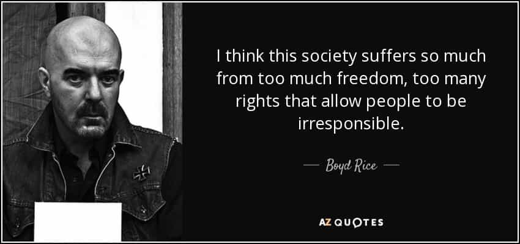
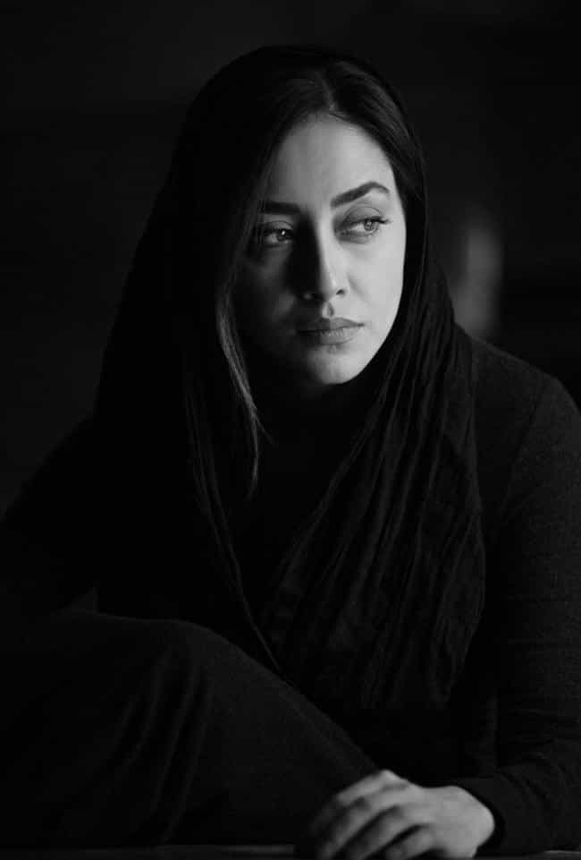

Edgar Tru is a Southern-based objectivist, natural-minded contrarian, and eleutheromania. Follow me on Gab.


If a right-winger was to convey to another right-winger that the hijab may be the unseen force of balance to preserve the West from faltering into total degenerate decay, what do you think the common response would be? A common response may be one of the following: “Islam oppresses women and that’s not what America is about!” “How can you side with the liberals like that? Gasp!” Or, perhaps the most heartbreaking of all, “Women deserve the same rights as men!”
Back in my youthful years of developing the brain-eating virus known as liberalism, which has now thankfully been cured, I embraced the dangers of female empowerment, equality, and standing up for ‘what is right’ in America. Women should be able to do as they please as any man—pursue a career, become president if they’re qualified, get a solid career and make bank, etc. On the surface, to the untrained eye, yes, these may seem like reasonable things to desire in your society. And who could possibly be against equality?
I’ve only recently come into this perspective and, if you’re open-minded enough for just a moment, whether you emotionally agree or not, you may at least understand where I’m coming from. Now, one may be able to observe that there is always this balance – scale, if you will – that comes through Nature and Her line of law and order.
Peace brings war, war brings peace. Peace brings too much freedom, to which develops into more liberal lifestyles, which leads to degeneracy, to which leads to an overall general sweep of societal decay. Thus, that society is weakened. What happens next? When one culture is weakened, in comes another hailing as the Vikings once have. War brings chaos, to which creates law and order by destroying the weakened culture, to which creates stability, to which, overtime is looked at and taken granted for, to which, again, brings peace. And the cycle begins all over again.
That is a huge general sweeping concept to which I’d find holds a strong case. The West has too much freedoms, too many options. Myself, I do not want someone limiting what I’m already able to legally do. However, my intellectual side recognizes the human animal’s need to buck up against things which may literally be for their own benefit. It is natural for man to look his authority figure in the eye and give him the old-fashion middle finger. Again, though, I recognize that sometimes a strong hand must be put over certain people in order to maintain law and order.

I’m sure you’ve heard many Western women talk about how oppressive the hijab is and that America is one of the best countries to be a woman because it grants them more freedom than other countries. Well, that’s the goddamn problem. And that may sound bloody harsh, but there is a serious danger to allowing this imbalance within our society. When women were allowed to vote, back way when in August 18, 1920, it seemed like a progression in American society, sure. Today, however, 2 years shy of a 100 years, we can observe what our society has become.
The men have lost their place of authority in the household, in the education system, in many aspects in the art world such as TV and feature-length film, in the literary world and publishing industry, etc. Both women and men have become whores, divorce rates are high, broken homes craft the child with an unbalanced and unhealthy mind which he then takes out into society furthering its infection, there’s an epidemic of drug abuse and overdose, alcoholism, high abortion rates, suicide, and so on the list continues.
Is this all due to allowing women the right to vote? Of course not. Men held the power, men let it go. They perhaps became too soft, too comfortable, too influenced by female emotion rather than that piss-and-grit brute mindset of their ancestors. So, when I hear females talk about how Islam sucks and the hijab is oppressive, I do find myself wondering if that’s the point to law and order.
Equality does not exist by Nature nor our own damn laws. What happens when we defy Nature when She has clearly given us rules to observe on how things ought to operate in order to keep a society and culture overall healthy, strong, safe and secure? Man has been given the responsibility to own this burden and either adhere to it, or defy it. It is a great responsibility. And, to quote Ben Parker, “With great power comes great responsibility.”

In the whoredom which is the West, allowing a woman to engage in coitus on-screen, while being gang-banged by three different males squirting sperm onto her face—that is what is considered female empowerment in today’s terms. Allowing a woman to get up on-stage while stimulating penetration from behind as she sticks her tongue out like a retarded sheep, that is considered female empowerment. Allowing a potential million young American women to never be shown the life of traditionalism and motherhood as propaganda aims to demonize it, while never showing any of the perhaps positives of it; that is considered female empower so that they may enter the workforce, slave to a corporation as her eggs die off and drown herself in her substance of choice. That is female empowerment. That is freedom.
I do not buy into this slogan that allowing a women to do whatever she pleases is actual female empowerment. Then what is empowerment to the female? There may be a multiple of answers to this inquiry, depending upon whom you ask, but let me give it a go: adhering to the laws of Nature as best you can is the closest you’ll ever get to obtaining empowerment. To adhere to the highest of laws, while being complimented by them, that is how you achieve the highest level of empowerment.
On this planet, if there be any god or goddess which exist, I’d claim to Nature. She is everywhere. In everything you touch, She is there. Touch your clothes, the carpet, a car or fence – it all comes from Her and we are all connected. There are a natural set of rules to best perform the task of law and order. And the Western liberal mentality of the twenty-to-twenty-first century are pissing away at those laws.
Now, some may disagree on what empowerment really means. But I cannot come to siding with the dogmatic view of freedom in terms of allowing ourselves, as a whole, to dwindle away into nothingness as some form of empowerment. That is suicidal. That could give way to suggesting this idea of ’empowerment’ is really non-existent at the end of the day. And, just like ‘freedom,’ if it leads to your destruction over time, is it really empowerment? There’s a lot to unpack there and many could chime in on it, but I’ll keep it simple for now.
If the Muslim women are adhering to Nature, by means of submitting to the dominance of man who, he himself plays his role in adherence to Nature by dominating the submissive, they are in step with law and order. And no matter how many liberals-in-denial preach on about how glorious the freedoms are here in America and how great women have it, it is certainly obvious, at least to myself, that it is ironically the one thing about to kill us off and wipe the slate clean.
If one possesses existential intelligence, then one may be able to see far beyond the horizon. We’re outside with a bunch of people and we see this beautiful array of light in the distance. Some say it is the dawn rising. For me, I get this cold chill running down my spine. While everyone pops out a chair and sits, drinking their vodka and chatting about the place, I decide to grab a ladder, climb to the very top step, and take out my binoculars. While everyone around me sees freedom and equality and a gorgeous sunrise, I see what it really is: the fires of destruction impending.
Read Next: The Orthodox Church Is The Answer To Reviving Christianity In Europe And Saving The West